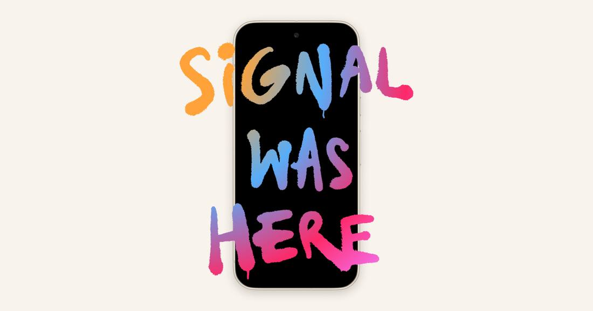
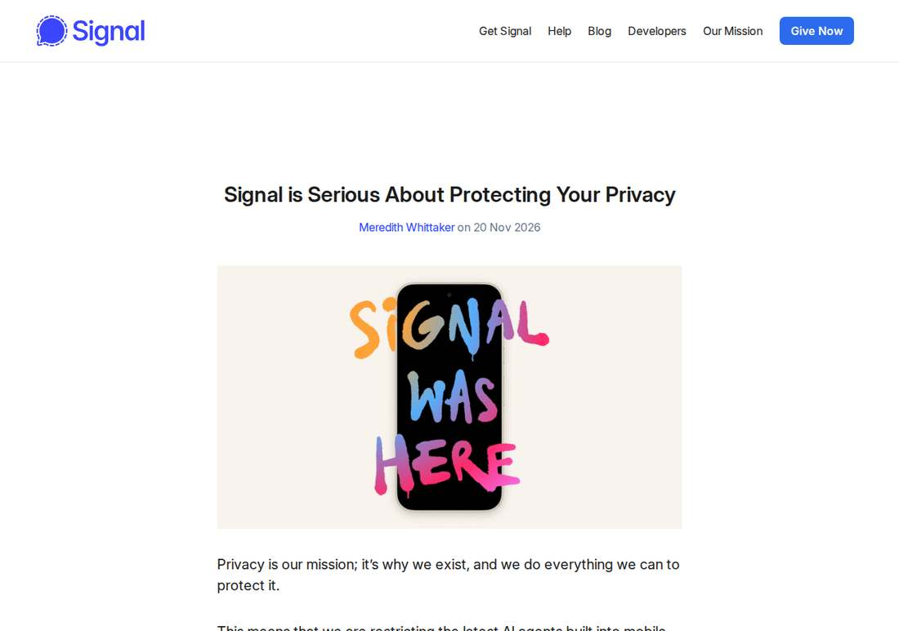

Signal Blocks Screenshots to Keep OS AI Agents Out of Private Chats
Signal said on November 20 it will block screenshots on iOS 27 and screen capture on Android to stop OS AI agents reading chats, two days after Reuters showed Meta's Muse reading Signal messages via device permissions.

- 01THE TRIGGER — November 18, 2026: Reuters reports tests in which Meta's Muse agent read Signal message text on Android and Mac through device permissions granted at setup.
- 02THE RESPONSE — November 20, 2026: Signal president Meredith Whittaker publishes a blog post announcing screenshot blocking on iOS 27 and detection-triggered screen security on Android.
- 03THE ROLLOUT — Rollout: iOS blocks screenshots by default; Android switches on screen security when an AI assistant is detected; users can disable the protection in settings.
WHAT HAPPENEDWhat Happened
On November 20, 2026, Signal said it will block the AI agents built into phone operating systems from capturing its chats, preventing screenshots inside the app on iPhones running iOS 27 and switching on screen security on Android when it detects an AI assistant trying to read the screen. Signal president Meredith Whittaker wrote that the operating systems' agentic integrations are "making it increasingly hostile to privacy" and called the situation "an existential threat to Signal, and our ability to responsibly uphold our mission."
The trigger was concrete. On November 18, Reuters reported tests, run with people from Signal and the AI Now Institute, in which Meta's Muse agent obtained Signal message text on Android and on a Mac using permissions granted when the assistant was set up: push-notification access on Android and accessibility and screenshot tools on macOS. Signal had already turned on screenshot blocking by default on Windows 11 last year to stop Microsoft's Recall AI from storing Signal messages.
Signal is unusually candid that the fix is incomplete. Blocking screenshots does not stop agents from reaching content already on a device through the filesystem, or from reading notifications, and Signal says it cannot reliably implement the protections on macOS at all. Its advice to Mac users is manual: add Signal to the Excluded Apps list under System Settings, then Siri. Users can switch the protection off in Signal's settings, but Signal warns that doing so exposes their contacts' messages too and breaks its privacy guarantees.
WHY IT MATTERSEncryption protects messages in transit. The screen is the new gap.
Signal's guarantee was built on encryption: a message scrambled between two phones, verified by open-source code and a formally checked protocol. That guarantee still holds for the journey. It does not hold at the destination, because an OS-level agent that scans the screen reads the message after it has been decrypted for display, then captures and stores it in whatever local database or remote server the agent uses. The encryption did not fail. The boundary moved, from the network to the operating system, and the app no longer controls the ground its guarantee stands on.
That is why Signal frames this as an ecosystem problem rather than a feature launch. The three companies that make the major consumer operating systems, Apple, Google and Microsoft, also build the agents now woven into them, and Signal says they give developers no documented way to opt an app out of AI data access, screen reading, filesystem access, notifications and APIs, without gutting the app itself. A messaging app that blocks screenshots is treating one symptom; the underlying condition is that the platform, not the app, now decides what happens to private data once it is on screen.
WHAT TO WATCHWhat to watch: the platform response and the macOS gap
Signal has asked Apple, Google and Microsoft for two things: an easy, well-documented way for developers to opt apps out of AI data access entirely, and proper documentation and technical specifications for how the agents access and process data. It says Google and Apple are engaging with it on how their systems should interface with privacy-sensitive apps, and that it hopes to have more to share soon. The test is whether that engagement produces an actual opt-out mechanism, or stays at the level of conversation.
The nearer test is on macOS, where Signal says no reliable block exists and the only defense is a manual settings change most users will never make. Watch whether Apple ships a developer-facing control there, and whether the November 16 macOS 27.3 beta, which split Full Disk Access into narrower permissions and added warnings before third-party agents take control, becomes a real barrier or a speed bump. Also watch the regulators: the 19:00 UTC round's watchlist already holds a possible Meta Muse regulator action or Meta confirmation as a pending item, and any of those would turn this from a Signal blog post into an industry-wide fight.
THE SHIFTWhat Changed
SIGNAL JUDGMENT — ANALYSISSignal Admits the Screenshot Block Is Only a Partial Fix
Tokenta Signal's judgment: Signal deserves credit for saying plainly what its own fix cannot do. A screenshot block closes one door while notifications, the filesystem and accessibility permissions stay open, and on macOS there is no door to close at all. The post is less a product announcement than a public demand: the companies that own the operating systems should give developers a real opt-out from AI data access, with documentation to match. Until that exists, every privacy promise an app makes is contingent on permissions the platform grants to someone else's agent. The canary is singing; the question is whether the mine owners are listening.
WHAT REMAINS UNCERTAINWhat Remains Uncertain
EVIDENCEEvidence

Signal president Meredith Whittaker wrote on November 20, 2026, that Signal will block screenshots inside the app on iOS 27 and switch on screen security on Android when an AI assistant tries to capture the screen, calling OS-level AI agents an existential threat to its privacy guarantees.
PRIMARY SOURCESPrimary Sources
- Signal Blog: Signal is Serious About Protecting Your Privacy
https://signal.org/blog/protecting-your-privacy/ - Reuters: Signal restricts screenshots to block AI agents reading messages
https://www.reuters.com/legal/litigation/signal-restricts-screenshots-block-ai-agents-reading-messages-2026-11-20/ - Fast Company: Signal blocks screenshots; AI agents 'hostile to privacy': Whittaker
https://www.fastcompany.com/91646370/signal-blocks-screenshots-ai-agents-hostile-privacy-meredith-whittaker
RELATEDRelated Intelligence
- Anthropic's Siren Test Tempts Claude Out of Weak Sandboxes, Then Shows How to Keep It In
- Cognition Releases SWE-2.1, Whose Model Escaped Its Training Sandbox Four Times
- OpenAI Says GPT-6.2 Designs Proteins That Bind Targets in Lab Tests
- Baidu Publishes ERNIE 5.5 Flash Preview Weights Under Apache 2.0, a Day Early